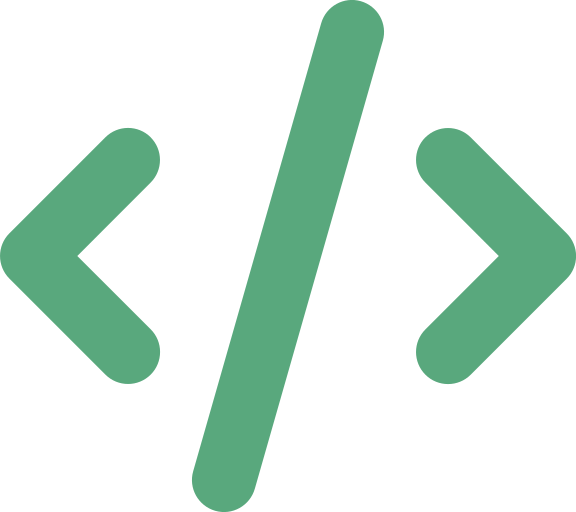

Portada
Arquitectura de Software
Semana 10 — Principios de Diseño de Software
SOLID, DRY, KISS, DIE y YAGNI · Universidad de Antioquia · Ingeniería de Sistemas · 2554608 · 2026-2

Apertura
Un sistema puede tener el estilo perfecto
y el código por dentro, un desastre

Transición
Bajamos un nivel: de sistema a componente
En las últimas nueve sesiones vieron patrones y estilos que responden a la pregunta "¿cómo se organiza el sistema completo?" — Layers, Hexagonal, Microservicios, y la taxonomía de Shaw y Garlan que los agrupa. Esa es la escala más alta: componentes, conectores, el sistema como un todo.
Hoy cambiamos de escala. No vemos un patrón ni un estilo nuevo — vemos reglas de diseño a nivel de código y componente: cómo debería verse una clase, un módulo, una función, sin importar si viven dentro de un monolito en capas o de un microservicio.
Un sistema con la arquitectura hexagonal perfecta puede seguir teniendo clases de 2000 líneas que hacen de todo. Los principios de hoy son la caja de herramientas para que eso no pase, dentro de cualquier estilo ya visto.
Concepto · Ficha técnica
SOLID — origen del acrónimo
| Autor de los principios | Robert C. Martin ("Uncle Bob") |
|---|---|
| Publicación original | Artículos individuales durante los años 90 y el paper "Design Principles and Design Patterns" (2000), donde los reunió y formalizó |
| Acrónimo "SOLID" | Acuñado poco después por Michael Feathers, quien tomó los cinco principios ya propuestos por Martin y los agrupó bajo un nombre memorable de cinco letras |
| Año aproximado | ~2000 (principios) — el acrónimo se popularizó en los años siguientes |
| Nivel de aplicación | Diseño orientado a objetos: clases, interfaces, módulos — no el sistema completo |
Un detalle que se pierde con frecuencia: Robert Martin propuso los cinco principios, pero no inventó el acrónimo — esa síntesis es mérito de Michael Feathers.
Concepto
Los cinco principios de SOLID
| Letra | Principio | Idea central |
|---|---|---|
| S | Single Responsibility | Una clase debe tener una única razón para cambiar — una sola responsabilidad |
| O | Open/Closed | Abierta a extensión, cerrada a modificación: se agrega comportamiento sin editar código que ya funciona |
| L | Liskov Substitution | Una subclase debe poder sustituir a su clase base sin romper el comportamiento correcto del programa |
| I | Interface Segregation | Preferir varias interfaces pequeñas y específicas antes que una interfaz gigante que obliga a implementar de más |
| D | Dependency Inversion | Depender de abstracciones, no de implementaciones concretas |
Liskov hace referencia a Barbara Liskov, quien formuló el principio de sustitución de tipos en 1987 — Martin lo incorporó como la "L" de SOLID.
Concepto · Ejemplo
Dependency Inversion, el que ya conocen
De los cinco, este es el que ya vieron aplicado a escala de sistema completo: Arquitectura Hexagonal (Semana 8) es, en esencia, Dependency Inversion llevado al nivel de todo el sistema — el dominio (el "hexágono") no depende de la base de datos ni del framework web concretos, depende de puertos (abstracciones); son los adaptadores concretos los que dependen del dominio, y no al revés.
- Sin DIP: una clase
ServicioPedidosinstancia directamenteMySQLRepositorio— cambiar de base de datos obliga a modificarServicioPedidos. - Con DIP:
ServicioPedidosdepende de una interfazRepositorioPedidos;MySQLRepositoriola implementa. Cambiar de base de datos no tocaServicioPedidos.
Este es el puente exacto entre lo que vieron a nivel de sistema (Hexagonal) y lo que ven hoy a nivel de clase: el mismo principio, aplicado en dos escalas distintas.
Contraejemplo
Cuando se viola SRP sin darse cuenta
Una clase Empleado que calcula el salario, genera el reporte en PDF y además guarda los datos en la base de datos tiene tres razones distintas para cambiar: una regla de nómina nueva, un cambio de formato del reporte, o una migración de base de datos. Eso viola Single Responsibility, aunque el código "funcione" y esté en un solo archivo prolijo.
La corrección no es dividir por dividir: es reconocer que ahí conviven tres responsabilidades — cálculo de negocio, presentación y persistencia — y separarlas en tres clases colaboradoras, cada una con una única razón para cambiar.
Transición
De cinco reglas a una idea más simple
SOLID exige cinco reglas relacionadas entre clases e interfaces. Los cuatro principios que siguen son más pequeños de enunciar, pero igual de determinantes: DRY, KISS, DIE y YAGNI caben cada uno en una frase, y comparten un mismo espíritu — reducir lo innecesario, ya sea código duplicado, complejidad, o funcionalidad que nadie pidió todavía.
Concepto · Ficha técnica
DRY — Don't Repeat Yourself
| Autores | Andy Hunt y Dave Thomas |
|---|---|
| Publicación | "The Pragmatic Programmer" (1999) |
| Definición formal | "Cada pieza de conocimiento debe tener una representación única, inequívoca y autoritativa dentro de un sistema" |
El matiz que casi siempre se pierde: DRY no es solo "no copies y pegues código" — es sobre no duplicar conocimiento. Dos funciones con el mismo código por coincidencia, que resuelven problemas distintos y evolucionan por razones distintas, no violan DRY. Pero una regla de negocio (ej. "el descuento máximo es 20%") escrita en tres archivos distintos sí la viola: cuando cambie la regla, alguien va a olvidar actualizar una de las tres.
Concepto · Continuación DRY
Duplicación de código vs. duplicación de conocimiento
- Duplicación de código: el mismo bloque de instrucciones aparece en varios lugares. Se corrige extrayendo una función, un método común o una clase base.
- Duplicación de conocimiento: la misma decisión de negocio (una fórmula, una validación, un límite) está codificada en más de un sitio, aunque el código se vea distinto. Es la forma más peligrosa porque no siempre salta a la vista revisando el código.
Consecuencia directa cuando se viola DRY: corregir un bug o cambiar una regla exige encontrar y actualizar todas las copias — y casi siempre alguna queda desactualizada, generando comportamientos inconsistentes entre partes del sistema que deberían coincidir.
Concepto · Ficha técnica
KISS — Keep It Simple, Stupid
| Atribuido a | Kelly Johnson, ingeniero jefe de Skunk Works, la división de proyectos avanzados de Lockheed |
|---|---|
| Década | Años 60 |
| Proyectos del equipo | El avión espía U-2 y el SR-71 Blackbird, entre los diseños aeronáuticos más avanzados de su época |
| El principio original | Un sistema debía poder ser reparado en el campo por un mecánico promedio, con herramientas básicas, bajo condiciones de guerra — sin depender de un especialista ni de equipo sofisticado |
No es una anécdota menor: Skunk Works diseñaba aviones en la frontera de lo técnicamente posible, y aun así Johnson insistía en que la simplicidad de mantenimiento era un requisito de diseño, no un lujo — la complejidad innecesaria mata en combate, cuando no hay tiempo ni especialista disponible.
Concepto · Aplicado a software
KISS en el código: simple no es "poco"
Trasladado a software, KISS dice: prefiere la solución más simple que resuelva el problema real, evita la complejidad que no aporta valor. No significa escribir código pobre o incompleto — significa no anticipar problemas que no existen ni construir mecanismos genéricos "por si acaso" donde una solución directa basta.
- Una función con tres
ifclaros es preferible a un motor de reglas configurable, si el sistema solo necesita esos tres casos. - El mismo espíritu de Kelly Johnson aplicado a código: si otro desarrollador (el "mecánico promedio") no puede entender y arreglar el módulo rápido, bajo presión, algo se sobre-diseñó.
KISS conecta directamente con SRP (una clase simple, con una sola razón para cambiar, es más fácil de mantener que una clase compleja con múltiples responsabilidades).
Concepto
DIE — Duplication Is Evil
DIE es una forma alternativa de recordar la misma idea de DRY, pero enunciada en negativo: en vez de "no te repitas", dice directamente "la duplicación es el enemigo".
A diferencia de SOLID, DRY, KISS o YAGNI, DIE no tiene un origen histórico tan bien documentado — no hay un libro o autor específico con la certeza de Hunt & Thomas o Kent Beck. Se trata más de una mnemotecnia popular dentro de la comunidad de desarrollo que una atribución precisa, así que aquí se presenta con esa honestidad: es el mismo principio de DRY, visto desde el ángulo opuesto, sin una fuente única confiable que reclamar como su origen.
Transición
El último principio: no construyas de más
SOLID, DRY, KISS y DIE hablan de cómo está escrito lo que ya existe. El último principio de hoy habla de qué construir en primer lugar — y es, con frecuencia, el más difícil de seguir porque va contra el instinto de "dejarlo listo para el futuro".
Concepto · Ficha técnica
YAGNI — You Aren't Gonna Need It
| Origen | Comunidad de Extreme Programming (XP), años 90 |
|---|---|
| Asociado a | Kent Beck y Ron Jeffries |
| Principio | No implementes una funcionalidad "por si acaso se necesita después" — constrúyela solo cuando exista una necesidad real y presente |
| Por qué importa | Construir de más cuesta tiempo y complejidad de mantenimiento que casi nunca se recupera, porque la mayoría de esas anticipaciones nunca se llegan a usar, o se usan distinto a como se imaginaron |
Extreme Programming (XP) es una metodología ágil de desarrollo de software de los años 90 que enfatiza iteraciones cortas, pruebas constantes y simplicidad de diseño — YAGNI es una de sus prácticas centrales.
Concepto · Ejemplo
YAGNI en la práctica
Un equipo diseña un sistema de facturación y agrega, desde el día uno, soporte para cinco monedas distintas y tres pasarelas de pago "porque seguro se va a necesitar cuando crezcamos" — aunque el producto actual solo opera en pesos colombianos con una única pasarela.
YAGNI dice: construyan la versión que resuelve el problema de hoy (una moneda, una pasarela); agreguen soporte multi-moneda cuando exista un cliente real que lo necesite. Ese código extra, mientras tanto, solo agrega superficie de bugs, más pruebas que mantener y una decisión de diseño tomada con menos información de la que existirá después.
Tensión conceptual
YAGNI contra Open/Closed: un dilema real
Open/Closed pide diseñar clases que se puedan extender sin modificar — lo que en la práctica suele significar anticipar puntos de extensión (interfaces, abstracciones) antes de que exista un segundo caso concreto que las use. YAGNI pide exactamente lo contrario: no construyas ese punto de extensión hasta que haya una necesidad real.
No hay una respuesta única correcta — es una tensión de ingeniería que se resuelve caso por caso: si el segundo caso de uso es prácticamente seguro y cercano (ej. "todos los métodos de pago van a necesitar validación de fraude"), diseñar con Open/Closed en mente desde ya puede ahorrar una refactorización costosa. Si es solo una posibilidad especulativa, YAGNI gana: es más barato refactorizar después que mantener abstracciones que nunca se usan.

Interacción
Encuentren la violación en su propio proyecto
En equipos, revisen el código de CodeF@ctory y respondan:
- ¿Hay alguna clase o módulo que viole SRP (más de una razón para cambiar)?
- ¿Hay una regla de negocio (validación, cálculo, límite) escrita en más de un lugar, violando DRY?
- ¿Hay algo que se construyó "por si acaso" y todavía nadie ha usado — un caso de YAGNI incumplido?
5 minutos · respondan en voz alta o en el chat
Síntesis
Ideas clave de hoy
- SOLID (Robert C. Martin, ~2000; acrónimo de Michael Feathers) son cinco principios de diseño orientado a objetos: Single Responsibility, Open/Closed, Liskov Substitution, Interface Segregation y Dependency Inversion — este último, la misma idea detrás de la Arquitectura Hexagonal, aplicada a nivel de clase.
- DRY (Hunt & Thomas, 1999) es sobre no duplicar conocimiento, no solo código — y DIE es la misma idea, enunciada en negativo, con un origen menos documentado.
- KISS (Kelly Johnson, Skunk Works, años 60) pide preferir la solución más simple que resuelva el problema real, sin sobre-diseñar.
- YAGNI (comunidad XP, Beck y Jeffries, años 90) pide no construir funcionalidad hasta que exista una necesidad real y presente.
- Estos cinco principios no son patrones ni estilos arquitectónicos — son reglas de diseño a nivel de código que se aplican dentro de cualquier estilo ya visto: un sistema en Layers, Hexagonal o Microservicios puede seguir violando SOLID o DRY a nivel de clase.
Cierre
Para la próxima semana
- Repasar los cinco principios y ubicar, en su proyecto de CodeF@ctory, al menos un ejemplo real (o una violación) de cada uno.
- Traer identificado un punto del proyecto donde haya tensión entre YAGNI y Open/Closed, para discutir en clase.
La Semana 11 abre las Arquitecturas para Aplicaciones Modernas: JAMStack, WebAssembly y WebSockets.